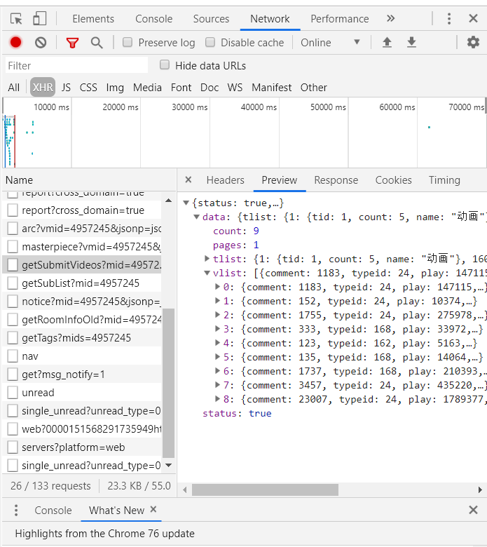
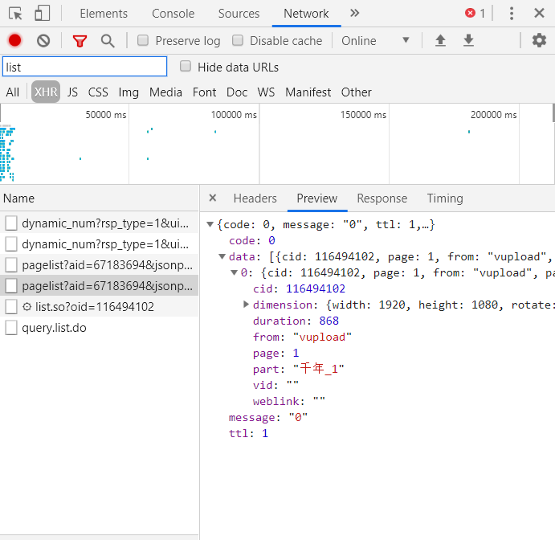

爬取b站弹幕并不困难。要得到up主所有视频弹幕，我们首先进入up主视频页面，即https://space.bilibili.com/id号/video这个页面。按F12打开开发者菜单，刷新一下，在network的xhr文件中有一个getSubmitVideo文件，这个文件里就有我们需要的视频av号了。如果直接抓取页面是拿不到的，因为视频是异步加载的。
在这个文件里的data标签下，有一个count是视频总数，pages是第几页，vlist就是我们要找的视频信息了，里面的aid就是每个视频的av号。它的请求链接是https://space.bilibili.com/ajax/member/getSubmitVideos?mid=av号&pagesize=30&tid=0&page=1&keyword=&order=pubdate。pagesize是每次传多少个视频信息。

拿到所有的视频av号后，我们打开视频页面。同样是按F12打开开发者菜单，刷新一下，在network的xhr中有两个文件，一个以pagelist为开头，另一个以list.so为开头。这两个文件，第一个里包含了视频的cid，第二个就是根据cid拿到的弹幕文件。同样，我们根据视频av号访问第一个文件的请求url，得到cid，再根据cid访问第二个请求url就可以了。

最后，我们对拿到的弹幕文件进行适当的整理。主要是从文件中的<d>标签中提取出弹幕文字，然后去重，计数，再储存到文件里。
import requests
from lxml import etree
import os
import json
from bs4 import BeautifulSoup
from requests import exceptions
import re
import time
def download_page(url):
headers = {
'User-Agent':"Mozilla/5.0 (Windows NT 6.1; WOW64) AppleWebKit/537.1 (KHTML, like Gecko) Chrome/22.0.1207.1 Safari/537.1"
}
data = requests.get(url, headers=headers)
return data
def get_video_page(space_num):
base_url = "https://www.bilibili.com/av"
url = "https://space.bilibili.com/ajax/member/getSubmitVideos?mid={}&pagesize=99&tid=0&page=1&keyword=&order=pubdate".format(space_num)
data = json.loads(download_page(url).content)['data']
total = data['count']
page_num = int(total/99) + 1
video_list = data['vlist']
video_url = []
for video in video_list:
video_url.append(base_url + str(video['aid']))
for i in range(2, page_num+1):
time.sleep(1)
url = "https://space.bilibili.com/ajax/member/getSubmitVideos?mid={}&pagesize=99&tid=0&page={}&keyword=&order=pubdate".format(space_num, i)
data = json.loads(download_page(url).content)['data']
video_list = data['vlist']
for video in video_list:
video_url.append(base_url + str(video['aid']))
return video_url
def get_barrage(name, space_num):
video_list = get_video_page(space_num)
aid_to_oid = 'https://api.bilibili.com/x/player/pagelist?aid={}&jsonp=jsonp'
barrage_url = 'https://api.bilibili.com/x/v1/dm/list.so?oid={}'
for url in video_list:
# 降低爬取速度防止被禁
time.sleep(1)
aid = re.search(r'\d+$',url).group()
# 这里有时会出现莫名其妙的错误
try:
oid = json.loads(download_page(aid_to_oid.format(aid)).content)['data'][0]['cid']
barrage = download_page(barrage_url.format(oid)).content
except requests.exceptions.ConnectionError:
print('av:',aid)
continue
if not os.path.exists('barrage/{}'.format(name)):
os.makedirs('barrage/{}'.format(name))
with open('barrage/{}/av{}.xml'.format(name,aid),'wb') as f:
f.write(barrage)
def reorganize_barrage(name):
results = {}
for filename in os.listdir('barrage/{}'.format(name)):
html = etree.parse('barrage/{}/{}'.format(name,filename), etree.HTMLParser())
# 提取出xml文件中<d>标签中的文字
barrages = html.xpath('//d//text()')
for barrage in barrages:
# 有些弹幕会有回车符
barrage = barrage.replace('\r', '')
if barrage in results:
results[barrage] += 1
else:
results[barrage] = 1
if not os.path.exists('statistical result'):
os.makedirs('statistical result')
with open('statistical result/{}.txt'.format(name), 'w', encoding='utf8') as f:
for key,value in results.items():
f.write('{}\t:\t{}\n'.format(key.rstrip('\r'),value))
if __name__ == '__main__':
# 在space list.txt文件里，我是用“up主名称：id”的格式来储存的，
with open('space list.txt', 'r') as f:
for line in f.readlines():
name, num = line.split('：')
print(name)
get_barrage(name, space_number)
reorganize_barrage(name)